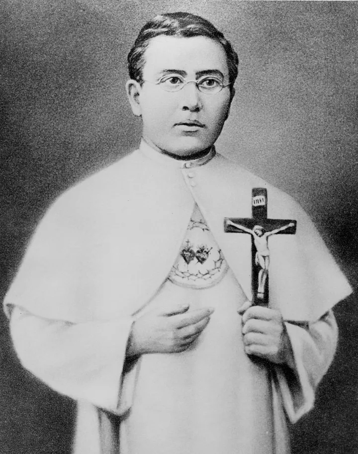

Unexpected Call To Serve
In the year 1863, a young Belgian missionary stood at a crossroads of destiny. Saint Damien's brother, who was originally assigned to the Hawaiian mission, suddenly fell ill. With unwavering courage and deep faith, Damien stepped forward to replace his brother, forever altering the course of his life and the lives of countless others.
This pivotal moment would lead him to the remote shores of Hawaii, where his legacy of compassion and service would be forged in the most challenging circumstances imaginable.

Father Damien as a young missionary before his journey to Molokai